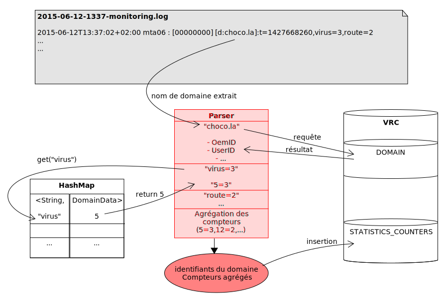

Vade Retro Technology
Présentation de stage de Arnaud Cojez
Du 30 mars 2015 au 27 juin 2015
Entreprise
- Société française basée à Hem
- Président : Georges Lotigier
- Chiffre d'affaires (2014) : 4 000 000 € (+10 %)
- 30 salariés
Historique
- 2003 : La première version du moteur de filtrage antispam Vade Retro est créée ;
- 2009 : SAS créée par apport partiel d’actifs en janvier 2009 ;
- 2012 : Lancement du Safe-Unsubscribe ;
- 2013 : Lancement de LoveYourEmails ;
- 2014 : Lancement de IsItPhishing.org, filiale ouverte à San Francisco ;
- 2015 : Signature avec CISCO.
Produits de Vade Retro Technology
Le Filtre Vade-Retro
La classification des e-mails
La désinscription sécurisée
Dashboard de statistiques
Types d'offre
Vade-Retro Cloud
Vade-Retro Cloud Kit
Offres End-User
- LoveYourEmails (IOS, Android & Web)
- Barre d'outils Outlook
- Vade-Retro Desktop
Position sur le marché
Présent dans 28 pays
- France ;
- États-Unis ;
- Canada ;
- Chine ;
- etc.
Environ 1500 clients
Plus grand client : 8,1 % des ventes en 2015.
Processus de développement
Des équipes distinctes
Filter Live
Innovation Lab
System Lab
Application Dev
Inspiré de la méthode Scrum
Méthode flexible par itérations successives
Service de Qualification
Déroulement du stage
Mission
Améliorer un algorithme déjà existant
Analyse de fichiers d'enregistrement de statistiques
Fichier d'enregistrement
YYYY-mm-DD-HHMM-monitoring.log
YYYY
Année (ex. : 2015)
mm
Mois (ex. : 06)
DD
Jour (ex. : 12)
HH
Heure (ex. : 13)
MM
Minute (ex. : 37)
Lignes dans ces fichiers
YYYY-mm-DDTHH:MM:SS+GMT mtaXX : [xxxxxxxx] [d:domaine.fr]:t=1234567890,cpt1=val1,...cptN=valN
YYYY
Année (ex. : 2015)
mm
Mois (ex. : 06)
DD
Jour (ex. : 12)
T
Séparateur
HH
Heure (ex. : 13)
MM
Minute (ex. : 37)
SS
Secondes (ex. : 12)
GMT
Décalage horaire (ex. : 02:00)
mtaXX
Gestionnaire d'envoi de mails (ex. : mta06)
[xxxxxxxx]
Identifiant de processus (ex. : 00000000)
[d:domaine.fr]
Nom de domaine (ex. : [d:choco.la])
t=1234567890
Timestamp - date d'enregistrement (ex. : 1434116232)
équivaut à : ven. 12 juin 2015 15:37:12 CEST GMT+2:00 DST
cpt1=val1,...
Compteur et valeur (reject=1,virus=2,rcptto=0/0/1)
Certaines lignes sont différentes
2015-03-30T10:36:01+02:00 mta02 : [00000000] alive
2015-03-30T10:36:01+02:00 mta06 ulog: [00000000] [error]:t=1427704500,fatal=1
Certains compteurs aussi
- rcptto=0/0/1
- spf=0/2
- etc.
Convertis en compteurs simples
(ex. : rcpttox5=1, spfx2=2, etc.)
Base de données VRC
DOMAIN
HOME_SUMMARY
STATISTICS_COUNTERS
7 types de compression
Représentés par des entiers
0 = 1 minute
(pas de compression)
1 = 5 minutes
exemple de période : 13h35 – 13h39
2 = 30 minutes
exemple de période : 13h30 – 13h59
3 = 1 heure
exemple de période : 13h00 – 13h59
4 = 1 jour
exemple de période : 12/06 à 00h00 – 12/06 à 23h59
5 = 1 semaine
exemple de période : 01/06 à 00h00 – 07/06 à 23h59
6 = 1 mois
exemple de période : 01/06 à 00h00 – 30/06 à 23h59
Outils utilisés
Java Entreprise Edition
- Tomcat
- Hibernate
MySQL
Gestion de projet
- Git
- Maven
- Redmine
- GitLab
Scripting
- Bash
- Python
- Perl
Ancien algorithme
Compteurs simplement ajoutés dans la base de données en "non-compressés".
Toutes les x minutes, récupère les entrées non compressées.
Concatène ces compteurs avec des entrées de compression plus larges.
Fonctionne, mais :
- complexe ;
- difficile à maintenir ;
- tient peu la hausse du nombre de clients.
Nouvel algorithme
Plusieurs versions
Chaque version, nouvelle problématique
Première Version
Trop basique, pas de compression
Compression
Conflit quand 2 threads updatent la même ligne
Actions
Si crash, certaines données perdues.
"Crash-proof"
Fonctionne de façon sécurisée, mais plutôt lent.
Version Finale
Ajout de l'index en base de données
CREATE INDEX MONITORING ON
STATISTICS_COUNTERS (STATISTICS_OEM_ID, STATISTICS_OWNER_ID,
STATISTICS_USER_ID, STATISTICS_DOMAIN_ID, STATISTICS_COMPRESSION_TYPE,
STATISTICS_DATE, STATISTICS_STREAM_TYPE);
Réintégration
Sous-Projet : Statistiques
Séparation des phases de construction
- setup
- initialize
Déploiement
Rapports de statistiques inaccessibles !
Tests de l'Interface Utilisateur
Ré-intégration de 0
- Supprimé moins de méthodes
- Désactivé la boucle principale
Statistiques accessibles !
Mais "No Data"
Absence de -monitoring.log
En cause : la désactivation de la boucle
Permettait la construction des fichiers
It works !

Le programme pourra bientôt passer en Qualification.
Scripts
Script Bash
Génération de fichiers de d'enregistrements pour tester
Fonctionne, mais trop lent.
Script Python
Idem que pour le script Bash
- Plus rapide ;
- Option d'attente ;
- Fichiers trop génériques.